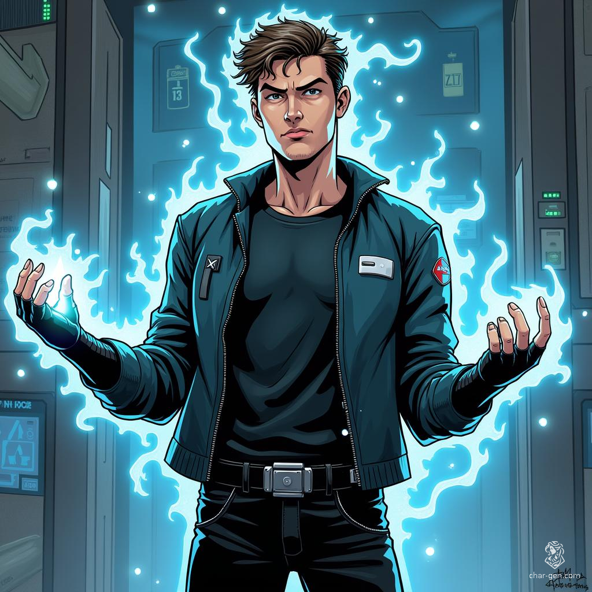

Mind Wave: A Prodigy of Psychic Perception

The Whispers Begin Alexander Lushank was born in 2003 to Ukrainian immigrants in Boston, Massachusetts. From an early age, he exhibited an uncanny awareness of his surroundings. His parents, Yuri and Natalia, often marveled at how he seemed to know when someone was approaching their small apartment before any knock or doorbell rang.
As Alexander grew, his abilities began to manifest more clearly. By the age of ten, he could sense the presence of others with startling accuracy, often knowing exactly how many people were in a room without looking. This gift, however, came with its challenges. Large crowds overwhelmed him, the constant awareness of numerous presences causing headaches and anxiety.
His enhanced mental capabilities weren't limited to sensing others. Alexander displayed a remarkable aptitude for logic and problem-solving, consistently outperforming his peers in academic settings. Teachers were amazed by his ability to grasp complex concepts with ease, often solving problems in ways that seemed beyond his years.
The Temptation of Power As a teenager, Alexander's powers continued to develop. He discovered he could establish mental links with others, communicating telepathically over short distances. This ability, while thrilling, also opened doors to temptation.
In high school, Alexander began using his telepathic link to cheat on tests, communicating answers to his friends. The allure of his growing abilities, combined with the pressures of adolescence and his immigrant background, led him down a path of increasing misuse of his gifts.
His most significant leap came when he learned to read surface thoughts of those he had linked with telepathically. This newfound ability opened up a world of possibilities and ethical dilemmas. Alexander found he could easily manipulate situations to his advantage, from acing job interviews to winning arguments by knowing exactly what the other person was thinking.
The Descent By the time he turned 18, Alexander had fully embraced a life of using his powers for personal gain. He adopted the moniker "Mind Wave," reveling in the sense of superiority his abilities gave him. His enhanced logic allowed him to plan and execute elaborate schemes, while his ESP kept him one step ahead of any potential threats.
Mind Wave's modus operandi was subtle but effective. He would use his ESP to identify targets in banks or high-end stores. Then, he'd establish a telepathic link and read their surface thoughts, gathering information he could use to manipulate them. His schemes ranged from convincing bank tellers to hand over cash to manipulating wealthy individuals into making "donations" to fake charities he had set up.
His activities didn't go unnoticed. The pattern of seemingly unrelated individuals willingly handing over money or valuables caught the attention of local law enforcement. However, Mind Wave's ESP allowed him to sense when authorities were closing in, keeping him one step ahead of capture.
The Fall Mind Wave's downfall came not from the authorities but from his own overconfidence. During what he thought would be a routine manipulation of a bank manager, he encountered unexpected resistance. The manager's mind was shielded, a protection he had never encountered before.
Unbeknownst to Mind Wave, his activities had attracted the attention of S.H.I.E.L.D., who had placed psychically shielded agents in key positions around the city. As he struggled to establish a telepathic link with the manager, his ESP alerted him to multiple presences converging on his location.
In a panic, Mind Wave attempted to flee but found himself confronted by Vision. The synthetic Avenger's unique mind was impervious to Mind Wave's telepathic abilities, and his phasing powers made him impossible to evade.
"Your journey of deception ends here, Alexander," Vision stated calmly, apprehending the young psychic.
The Reckoning The trial of Alexander Lushank was a complex affair. His telepathic abilities made traditional interrogation and testimony challenging. Special measures had to be taken, including the use of psychic dampeners, to ensure a fair trial.
The evidence against him was substantial, but it was the testimony of Vision that ultimately shaped Alexander's fate. The Avenger argued that imprisonment would be a waste of Alexander's potential and that rehabilitation would better serve both the young man and society.
The judge, persuaded by Vision's argument and wary of the challenges of incarcerating someone with psychic abilities, offered Alexander a choice: serve time in a specialized containment facility or undergo rehabilitation at the Boston Avengers Academy.
The Path to Redemption Alexander's arrival at the Boston Avengers Academy marked the beginning of a challenging journey. The Academy's rigorous training program pushed him to explore the ethical applications of his powers. He learned to use his ESP for search and rescue operations, his telepathic link for team coordination, and his mind-reading abilities for crisis negotiation.
The Superhero Ethics: Being Heroic course forced Alexander to confront the harm he had caused and the responsibility that came with his gifts. He struggled with the temptation to use his powers for personal gain, but the supportive environment of the Academy and Vision's mentorship helped him stay on track.
One of the most significant challenges was learning to work as part of a team. Used to relying solely on his own abilities, Alexander had to learn to trust others and use his powers to support group efforts rather than individual gain.
Mind Wave Rises As his training progressed, Alexander, now fully embracing his Mind Wave persona, began to show remarkable growth. His enhanced logic, combined with his psychic abilities, made him an exceptional strategist. He excelled in courses on tactical planning and crisis management, often anticipating potential issues before they arose.
The turning point in Mind Wave's redemption came during a hostage situation at a local bank. Using his ESP, he was able to accurately map out the positions of the hostages and captors. His telepathic link allowed for silent communication with his team, coordinating their movements with precision. When negotiations stalled, his ability to read the surface thoughts of the lead captor provided crucial insights that led to a peaceful resolution.
This success marked a significant milestone in Mind Wave's journey from manipulator to hero. He had used his powers not for personal gain but to save lives and uphold the law.
A New Chapter Today, Mind Wave stands as a testament to the power of redemption and the responsible use of psychic abilities. His graduation from the Boston Avengers Academy was a quiet but significant affair, attended by Vision, his fellow trainees, and his parents, who had come to understand and accept their son's unique gifts.
As a Probationary Avenger, Mind Wave has found his niche in support and reconnaissance roles. His ESP makes him an invaluable asset in search and rescue operations, able to locate survivors in disaster zones with uncanny accuracy. His telepathic abilities allow for seamless team coordination in the field, while his mind-reading skills have made him a go-to negotiator in hostage situations.
Alexander knows that his journey is far from over. He continues to grapple with the ethical implications of his powers, particularly his mind-reading abilities. The temptation to abuse his gifts is a constant struggle, but one he faces with growing strength and integrity.
As Boston faces new challenges, Mind Wave stands ready to perceive the unseen, link minds in unity, and apply his enhanced logic to protect the city he once exploited. His story is a reminder that even those who have misused their gifts can find a path to heroism, using their unique abilities to make a positive difference in the world.